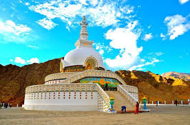
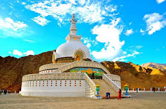

Ladakh is a union territory of India that's known for its high mountains, lakes, rivers, and deserts. It's located in the northern part of the Indian subcontinent.
1. What is Ladakh famous for?
Ladakh gains a lot of popularity for being the only cold desert in India apart from bordering the World's highest saltwater Lake Pangong Lake. Riding up the highest motorable road in the world, Khardung la is a dream come true for many.
2. How many tourist places are there in Ladakh?
Some renowned tourist attractions in Ladakh include Soma Gompa, Thiksey Monastery, Tsemo Fort, Shanti Stupa, Hemis Festival, Losar Festival, etc. Ladakh is also a dream destination for thrill seekers, as it offers a massive range of adventures.
3. Which month is best to visit Ladakh?
April - June ( 2°C to 19°C ) : With the month of April, travel passes for tourists are open. Hence, summer season is the best time to visit Ladakh. The weather during this time is crisp and the skies are clear, offering splendid views that can be enjoyed through a ride on bike or jeep.
 
